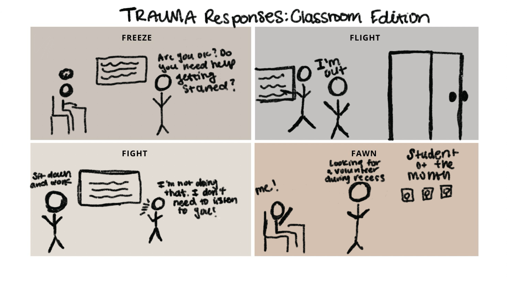

Trauma is not a dirty word. Most people, if not all, will experience trauma in their lifetime.
I, like so many of you I’m sure, believed that trauma was a moment (or multiple moments) that caused or threatened harm to our physical safety, mental well-being, or dignity as humans. Experiencing the unexpected loss of a loved one, getting into an accident, being targeted by police officers, and facing ongoing sexual violence are all examples of traumatic experiences, no? Well, of course, they are; however, trauma is not the moment itself.
Trauma is the body’s protective response due to our nervous system's inability to regulate and return to homeostasis (MHS, 2020; Manakem, 2017). Trauma lives in the reaction, and this is our way of surviving. The problem occurs when a person becomes stuck in their trauma response. Far too often, a person “becomes” their trauma to others, ultimately ignoring the root causes of it.
Thank your body. It’s keeping you alive. Nothing is wrong with you.

Why does it matter?
As educators and school personnel, you will undoubtedly have to navigate trauma - the trauma of your students, your own trauma, and the trauma of schooling itself. Schools across the board have taken an interest in integrating trauma practices into their work, but if done incorrectly, this work can easily be approached from a deficit-based perspective, perpetuating further harm (Miller and Flint-Stipp, 2024). The weaponization of trauma most often occurs when the claim becomes that students are “too traumatized” to engage fully in critical, thoughtful ways and the sole purpose is to control behavior rather than move towards healing.
The goal of understanding trauma is not to replace the professionals in your school who are equipped to do this work (i.e. counselors, therapists, and social workers) but to ensure that you are doing what you can to mitigate the trauma of schooling and beyond. This starts with creating safe, joyful, caring, vulnerable, and loving classrooms.